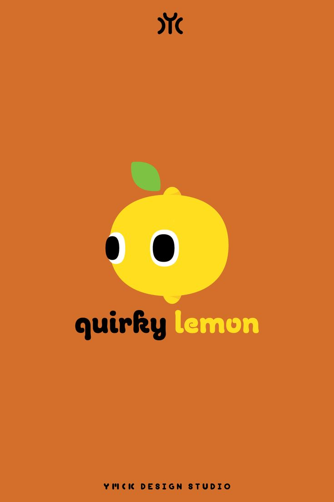
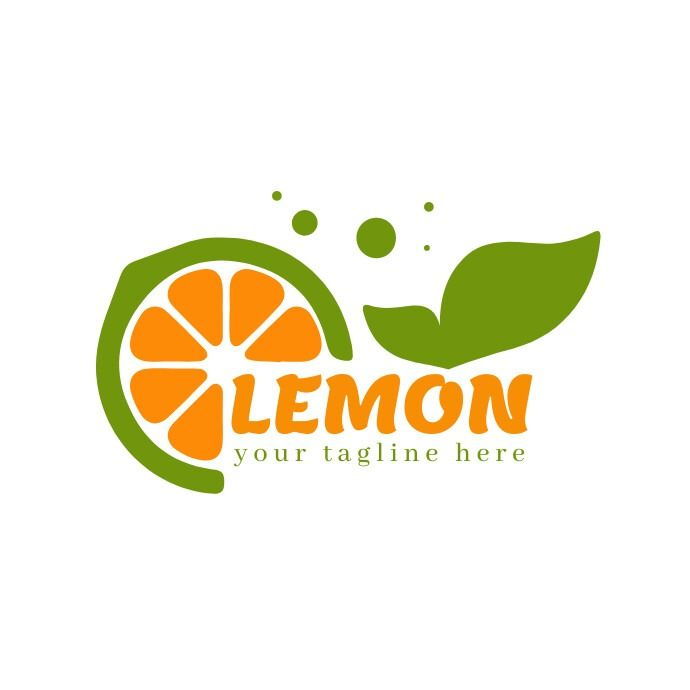
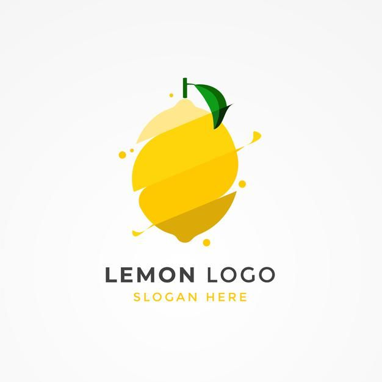
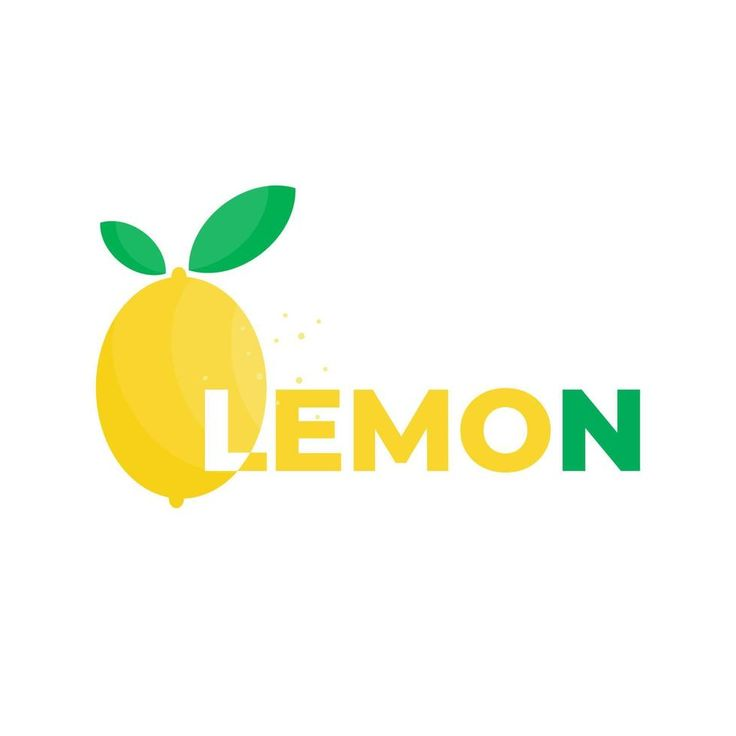
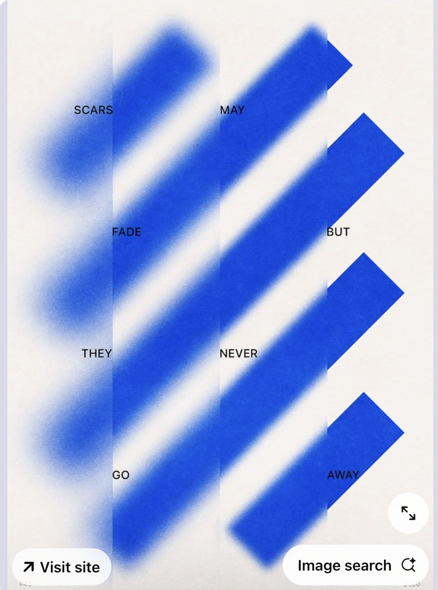
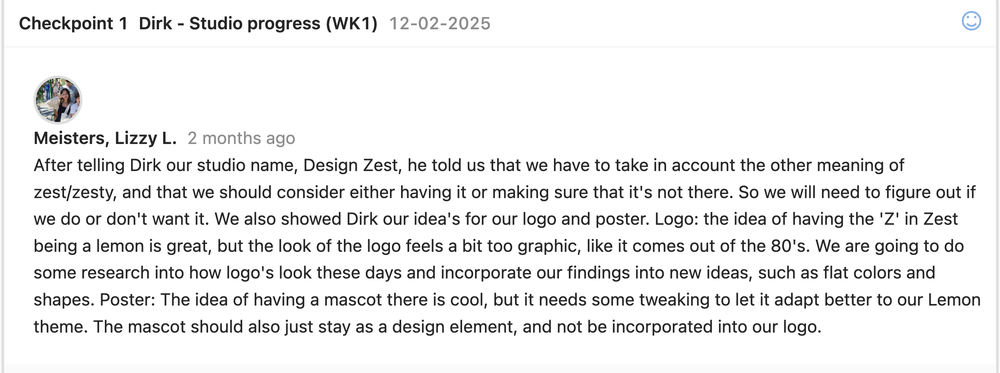
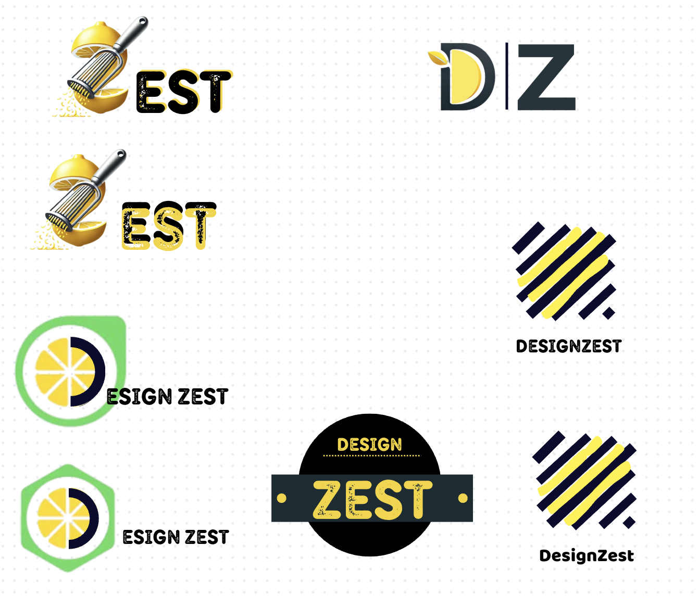

Posters for Heicha
After coming up with a name for our group I decided to do a logo that is unique and is showing off the "zest" part I looked at logos on pinterest and come up with the idea to make the "z" look like a lemon, make logos woth different shapes to be more simple, or include basically a halt lemon in our logo
    After having in mind what I want I startd designing and using also AI to generate me a "z" that look like a lemon. I made several logos ideas and then put them together to gather feedback later on, My first logo was mainly focused on the AI version and i copy pasted the "z" and put it in canva and continued the "est" later with a font that will match the "z". I found it at first good because it showes the peeled lemon and also the design was good , the zester was also there but putting "Design" looked off so I decided to get a feedback from the teacher

I asked Dirk on my logo design and he told me that is too detailed and better make more research on how the nowadays logos look like, he told me also to visualize how it will look in every possible size. Because the logo I created at first when I put in a website it will be small and the details wont be noticable, that will represent more of a "bad design choice"
After the feedback I decided to create more simple logos, something with squares, circles etc. I did a research more in deep and then saw one of my old photos inspirations from pinterest and then i got the idea to place yellow stripes with a form of a lemon and the darker coloured stripes will be the zester, additionally I desided to put the name of the group below the stripes as well, it turned out simple and pretty but I didn't know if people will notice that this is a lemon or if they will recognize our group, so i asked Mikael for a feedback and without having to exmplain he went for that logo and told me that he actually sees the lemo and the zester. The other logos in my opinion were still too detailed or not so representable of the name "design zest"
I realized that not everything needs to be chaotic and to have a lot of details, its important most of the times to have a simple design that a big group of audience can undestand by just looking at it, having feedbacks for iterations also are a big role in making a product
Self Small projects
For the first poster, I wanted to create something that reflects our group’s creativity, style, and the way we work together. I was inspired by poster designs I saw on Pinterest—some were simple and fresh, others were more detailed—and I liked the idea of combining both approaches.
The house in the middle represents our team, like a family, all under one roof. I made the roof look like a lemon to connect with our brand, Design Zest, and to show that our ideas are full of flavor and originality. The house is floating in space, surrounded by lemon slices, which stand for our ideas going beyond limits—outside the universe, outside the box.
The slogan “Squeeze the Universe, Design Beyond” ties it all together. It shows how we take inspiration from everywhere and turn it into something bold and unique. Overall, the poster is meant to be fun, eye-catching, and a true reflection of how we work as a team.
For the second one, I wanted to go for a more minimal and fresh look that still connects strongly to our brand Design Zest. I called it "Lemon Space", tying into our concept of creativity that goes beyond boundaries. The scattered lemon slices represent our energetic and bold ideas—bright, sharp, and full of flavor.
The white background and soft yellow tones keep it clean and modern, letting the lemons and text stand out. I added a short message that reflects who we are as a team—creative, passionate, and always ready to bring something new to the table.
This poster is meant to feel light but still powerful. It’s like a visual "squeeze" of our identity—zesty, bold, and full of positive energy.


This is a template to help you analyze sources in your research and reflect on what you've read for your portfolio.

After Effects
Started drawing the logo in Adobe Illustrator each stripe on different layer so that later on I can animate it in after effects, used some effects from the tool to make it look like there is a zest falling also added a background that is going to match more in future, still in process. Showed it to the teachers and present it and got some feedback that will be implemented soon.Also the file was too big to upload in github so I compressed it thats why there is a watermark
Art Department
This document outlines the structure expected for your portfolio, including layout, required sections, and submission format.
This cheat sheet summarizes key grading criteria. Use it as a checklist before submitting your project!
This is a template to help you analyze sources in your research and reflect on what you've read for your portfolio.
This is a template to help you analyze sources in your research and reflect on what you've read for your portfolio.